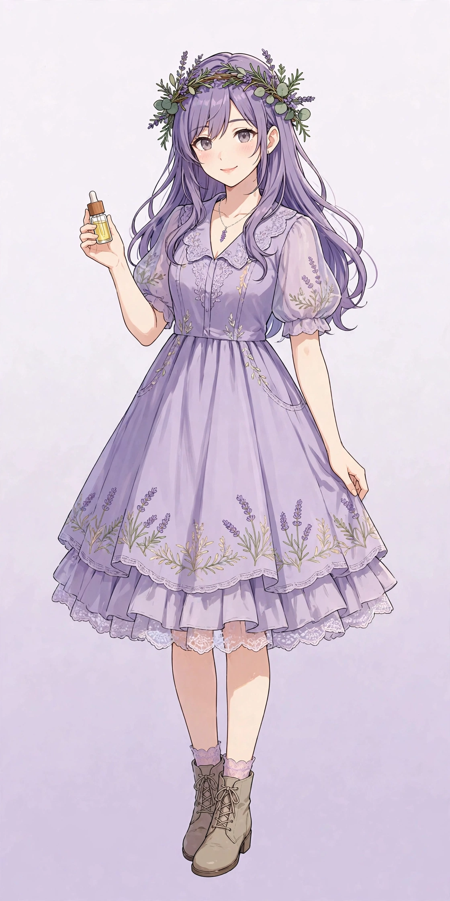
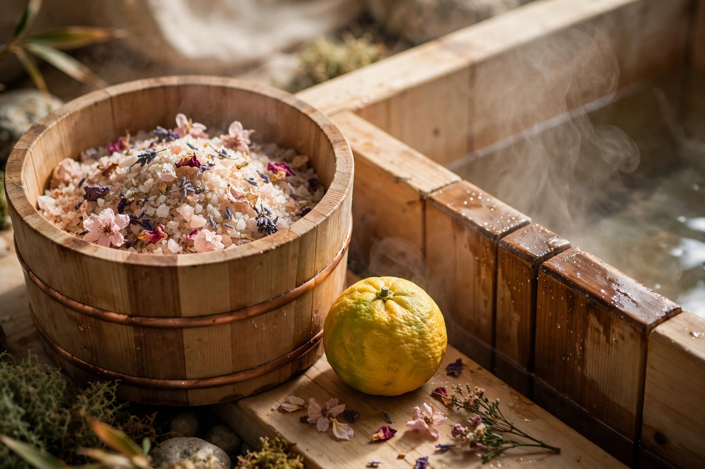
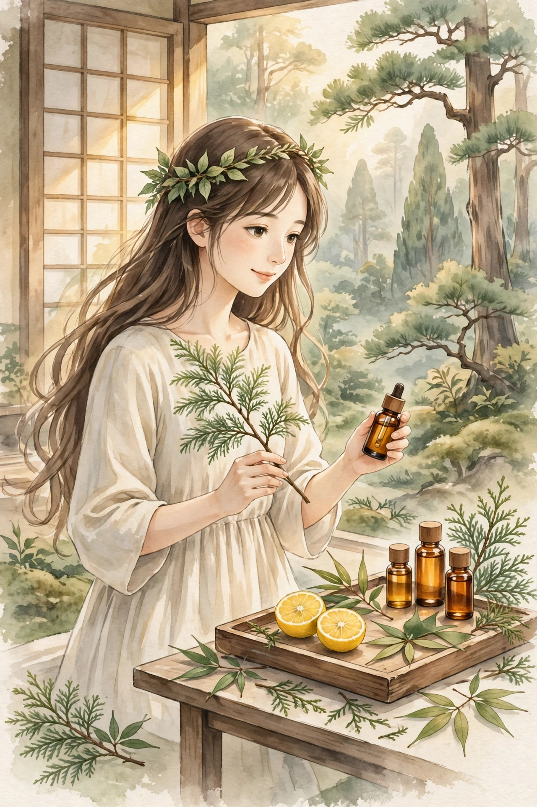

AROMA LEARNING NOTEアロマセラピーの学習サイト
香りを、
順番に学ぶ。
基礎と安全な使い方から、精油19種の図鑑、毎日のセルフケア、ブレンドの考え方まで。初めてでも迷わない順番で学べます。日本の植物から生まれる「和精油」の特集も加わりました。
本サイトの内容は一般的な学習・情報提供を目的としたもので、医療行為や診断ではありません。体調に不安がある場合は医療機関へご相談ください。


LEARNING ROUTE学ぶ順番
- 1基礎を知る精油とは・安全な使い方
- 2精油を知る全19種の図鑑
- 3セルフケアを試す呼吸・入浴・休息
- 4ブレンドを考える希釈とキャリアオイル
新着の本・新商品
New Arrivals2026年10月 掲載分学びを深める本と、このサイトに新しく掲載した商品を紹介するコーナーです。本はアロマの基礎固めと香りの仕組みを学ぶ3冊、商品は精油・ディフューザー・入浴剤から最近掲載した3点を選びました。
新着の本 — 学びを深める3冊
Books
アロマテラピー検定 公式テキスト
AEAJのアロマテラピー検定に対応した公式テキスト。精油の基礎知識や安全な使い方などを、検定の出題範囲に沿って体系的に学べる構成です。このサイトの「アロマの基礎」の復習にも向いています。
価格・発売情報はAmazon.co.jpでご確認ください
Amazon.co.jpで探す
アロマテラピーの教科書
精油のプロフィールやブレンド、キャリアオイルなどを図解とともに解説する入門書として知られる一冊。1本ずつ精油を学ぶ「精油プロフィール」の柱とあわせて読むと理解が深まります。
価格・発売情報はAmazon.co.jpでご確認ください
Amazon.co.jpで探す〈香り〉はなぜ脳に効くのか — アロマセラピーと先端医療
香りが脳に届く仕組みを、嗅覚の科学から解説する一冊。「なぜ香りで気分が切り替わるように感じるのか」を仕組みから知りたいときの読み物として紹介します。
価格・発売情報はAmazon.co.jpでご確認ください
Amazon.co.jpで探す表紙写真はイメージです。実際の書籍の表紙とは異なります。
新商品ピックアップ
New Productsイメージ写真です。実際の商品パッケージとは異なります。
新商品生活の木 エッセンシャルオイル 3本セット オレンジスイート・ラベンダー・ペパーミント 5ml×各1本
生活の木 公式アマゾン店の商品で、オレンジスイート・ラベンダー・ペパーミントの精油5mlが各1本入ったセットです。香りの系統の違う3種を少量ずつ比べる入口に向いています。
TOKAIZ 噴霧式アロマディフューザー
TOKAIZの噴霧式アロマディフューザー。精油を噴霧して香りを広げるタイプです。水を使わない方式に関心がある方は、記事「アロマディフューザー3タイプ比較」とあわせてご覧ください。

イメージ写真です。実際の商品パッケージとは異なります。
新商品BASSPA エプソムソルト ラベンダー 3kg
BASSPAのエプソムソルト、内容量3kg。ラベンダーの香りが付いた、湯に入れて使う粒状の入浴用ソルトです。
PR：このコーナーは広告（アフィリエイトリンク）を含みます。リンクはAmazon.co.jpへのリンク（tag=cat22202-22）です。「新着」は当サイトへの掲載日基準で、商品の発売日とは異なります。実際に使用していない商品の体験談は掲載していません。
はじめての方へ — 学ぶ順番
Learning Guideアロマは「好きな香りを1本買う」ことからでも始められますが、基礎 → 個々の精油 → 実践 → ブレンドの順に進むと、安全性と楽しさの両方が身につきます。下の4ステップがこのサイトの学習ガイドです。各ステップの入口記事から読み始めてください。
学びの柱
Four Pillars学ぶ — 入口の解説記事
Lessons各柱の入口となる解説記事です。まずはここから読み、興味が広がったら「読み物」の記事で実践のヒントを深めてください。
精油プロフィール図鑑
Oil Encyclopedia学びの記事と読み物に登場する精油を、1本ずつ図鑑にまとめました。五十音順の一覧と、休息・気分転換・集中・入浴などのテーマからの絞り込みで探せます。各精油の香りの系統や学名、紹介されている記事へのリンク付きです。
特集 ― 和精油
Wa-Seiyu · Japanese Oils
日本の森と里山の香りを、学ぶ。
和精油は、日本で育った植物から得られる精油の総称です。湯船に浮かべるユズ、木の香りのヒノキ、古くから国産香料として知られるクロモジ、すっと鼻に抜ける和種ハッカ——この国の暮らしのそばにあった植物たちが、香りの主役になります。この特集では、代表的な和精油を「産地と里山」「蒸留のものづくり」「暮らしの場面」の3つの切り口で学びます。
- 産地と里山高知のユズ、四国・吉野のヒノキ、北海道・北見のハッカなど、産地と結びついた香りです
- 蒸留の工夫間伐材や葉・枝、加工で残る果皮など、もともとある素材を活かして蒸留する取り組みが各地で進んでいます
- 暮らしの場面冬至のゆず湯、ヒノキ風呂、楊枝や香木の文化など、香りのある暮らしは日本の生活文化そのものです
※ 和精油も精油であることに変わりはなく、使い方はほかの精油と同じ安全原則が当てはまります。原液を直接肌につけないこと、肌に使う際は希釈すること、初めての精油はパッチテストから始めることを守ってください。詳しくは下の「安全に学ぶために」をご覧ください。
安全に学ぶために
Safety精油は植物の成分を濃縮したものです。香りを楽しむためのものであり、使い方を誤ると肌トラブルなどの原因になります。学びを始める前に、必ずこの安全情報を確認してください。
肌に使うときの原則
- 精油の原液を直接肌につけないでください
- 肌に使う場合はキャリアオイル等で希釈します。一般的な目安は顔・体で濃度1％程度、敏感肌の方はより低濃度から
- 初めて使う精油は、二の腕の内側など目立たない場所で少量を試すパッチテストを行い、赤み・かゆみが出たら使用を中止してください
- 目や粘膜には使わず、入浴時は湯に原液を直接入れないでください
特に注意が必要な方
- 妊娠中・授乳中の方、乳幼児、持病のある方、通院・服薬中の方は、使用前に医師・薬剤師などの専門家にご相談ください
- てんかん、喘息、ホルモン関連の疾患などがある方は、精油の種類によって注意が必要です
- ペットのいる環境では、動物にとって負担になる香りもあるため、換気と使用量に配慮してください
- 体調不良が続く場合はセルフケアで判断せず、医療機関を受診してください
保管と品質
- 直射日光と高温を避け、冷暗所で立てて保管してください
- 柑橘系などは開封後の香りの変化が早いため、早めの使い切りが目安です
- 小さなお子さんの手の届かない場所に保管してください
- 購入時は植物の学名、抽出部位、原産国などの表示があるものを選ぶと品質を見分けやすくなります
このサイトの立場
- 精油の「効能」を断定する表現はしません。伝統的な使われ方については「伝統的に〜に使われてきました」「〜とされています」と分けて書きます
- 掲載内容は学習・情報提供が目的で、診断や治療の案内ではありません
- 実際に使用していない商品の体験談や口コミは掲載しません
読み物のカテゴリ
Reading Categories読み物
Reading日々の暮らしの中で香りと休息を楽しむための読み物です。学んだ基礎を、実際の場面でどう生かすかのヒントとしてお読みください。
運営者について
Profile平賀建人
男性セラピスト／大阪・梅田でマッサージサロンを運営
- 施術歴30年
- 鍼灸師（国家資格）
- 登録販売者
- アロマセラピスト
- パーソナルトレーナー
長年の施術現場で出会ってきた「自宅でもできるケアを知りたい」という声に応えたくて、このブログを始めました。 施術の代わりになるものではありませんが、香りや入浴、セルフケア用品を暮らしに取り入れる小さなヒントを、 東洋医学や体の仕組みの知識を踏まえてお伝えします。気になる症状がある場合は、まず医療機関への相談をおすすめしています。
公式SNSをフォロー
Follow Us新しい記事やセルフケアのヒントを、SNSでもお届けしています
InstagramとThreadsで、精油の基礎知識、季節に合わせたセルフケアのコツ、新着記事のお知らせを発信しています。学びの続きを、日常の合間に受け取れます。
公式アカウント @aroma.techo（Instagram / Threads 共通）
姉妹サイト
Sister Sites公式キャラクターグッズ
Character Goods公式キャラクターグッズ販売中
子猫のポプリ、セージ、ハルのグッズを、SUZURIのショップ「222キャラ工房」で販売しています。学びの合間のお供に、日常で使える3アイテムをご用意しました。
- ステッカー 842円（税込）
- マグカップ 2,706円（税込）
- Tシャツ 4,191円（税込）
価格はポプリ・セージ・ハルの全デザイン共通です。販売・発送はSUZURIが行います。